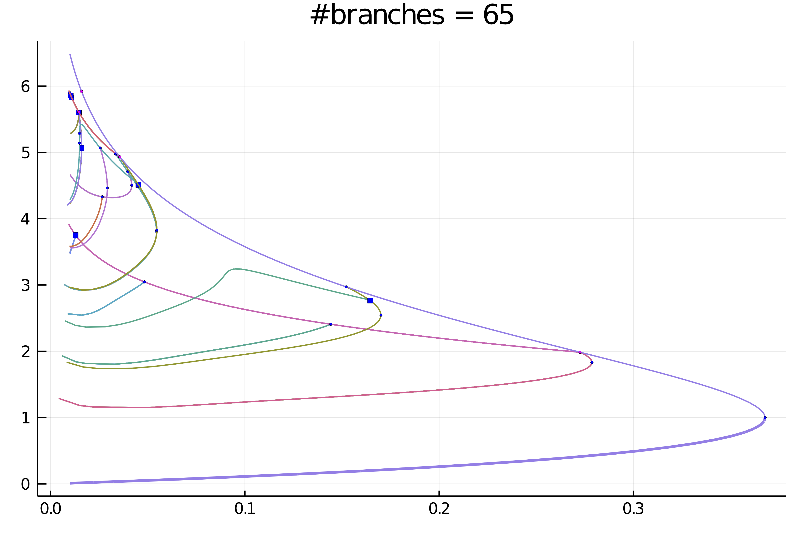
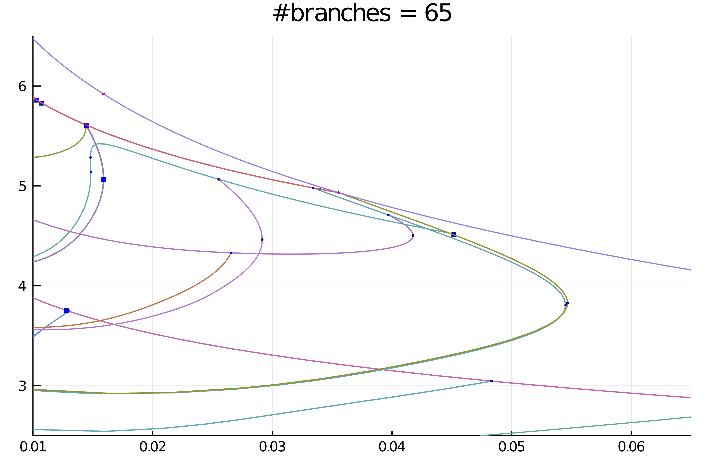
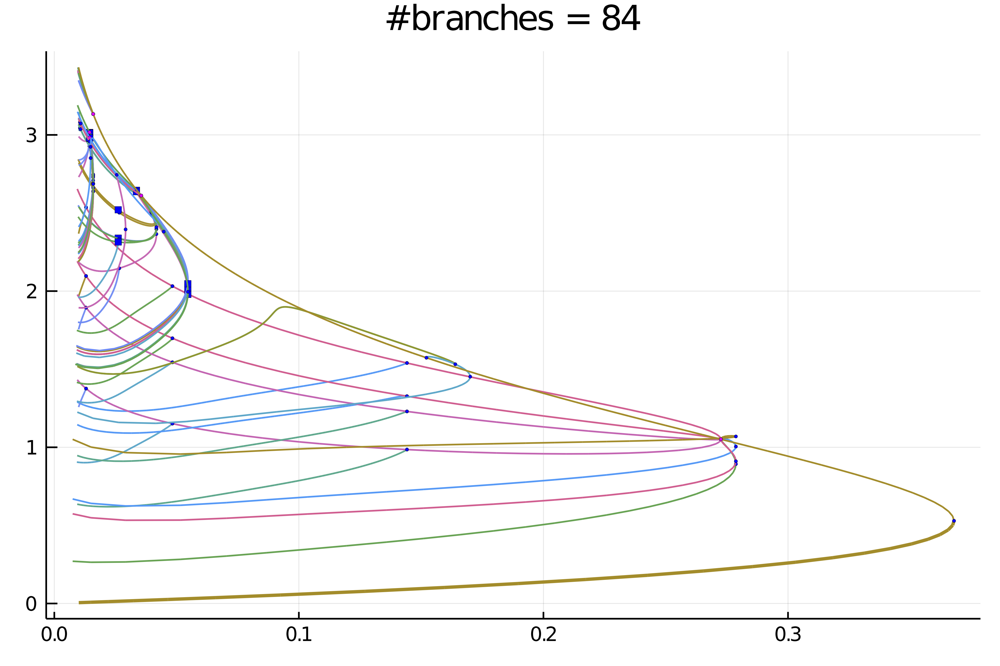

Automatic diagram of 2d Bratu–Gelfand problem (Intermediate)
The following example is exposed in Farrell, Patrick E., Casper H. L. Beentjes, and Ásgeir Birkisson. The Computation of Disconnected Bifurcation Diagrams. ArXiv:1603.00809 [Math], March 2, 2016.
We consider the problem of Mittelmann:
with Neumann boundary condition on $\Omega = (0,1)^2$ and where $NL(\lambda,u)\equiv-10(u-\lambda e^u)$. This is a good example to show how automatic bifurcation diagram computation works.
We start with some imports:
using Revise
using DiffEqOperators, ForwardDiff
using BifurcationKit, LinearAlgebra, Plots, SparseArrays, Parameters, Setfield
const BK = BifurcationKit
# define the sup norm
norminf = x -> norm(x, Inf)
# some plotting functions to simplify our life
plotsol!(x, nx = Nx, ny = Ny; kwargs...) = heatmap!(reshape(x, nx, ny); color = :viridis, kwargs...)
plotsol(x, nx = Nx, ny = Ny; kwargs...) = (plot();plotsol!(x, nx, ny; kwargs...))and with the discretization of the problem
function Laplacian2D(Nx, Ny, lx, ly, bc = :Neumann)
hx = 2lx/Nx
hy = 2ly/Ny
D2x = CenteredDifference(2, 2, hx, Nx)
D2y = CenteredDifference(2, 2, hy, Ny)
Qx = Neumann0BC(hx)
Qy = Neumann0BC(hy)
D2xsp = sparse(D2x * Qx)[1]
D2ysp = sparse(D2y * Qy)[1]
A = kron(sparse(I, Ny, Ny), D2xsp) + kron(D2ysp, sparse(I, Nx, Nx))
return A
end
ϕ(u, λ) = -10(u-λ*exp(u))
dϕ(u, λ) = -10(1-λ*exp(u))
function NL!(dest, u, p)
@unpack λ = p
dest .= ϕ.(u, λ)
return dest
end
NL(u, p) = NL!(similar(u), u, p)
function Fmit!(f, u, p)
mul!(f, p.Δ, u)
f .= f .+ NL(u, p)
return f
end
Fmit(u, p) = Fmit!(similar(u), u, p)It will also prove useful to have the jacobian of our functional and the other derivatives:
function JFmit(x,p)
J = p.Δ
dg = dϕ.(x, p.λ)
return J + spdiagm(0 => dg)
end
D(f, x, p, dx) = ForwardDiff.derivative(t->f(x .+ t .* dx, p), 0.)
d1Fmit(x,p,dx1) = D((z, p0) -> Fmit(z, p0), x, p, dx1)
d2Fmit(x,p,dx1,dx2) = D((z, p0) -> d1Fmit(z, p0, dx1), x, p, dx2)
d3Fmit(x,p,dx1,dx2,dx3) = D((z, p0) -> d2Fmit(z, p0, dx1, dx2), x, p, dx3)
jet = (Fmit, JFmit, d2Fmit, d3Fmit)We need to pass the parameters associated to this problem:
Nx = 30
Ny = 30
lx = 0.5
ly = 0.5
Δ = Laplacian2D(Nx, Ny, lx, ly)
# parameters associated with the PDE
par_mit = (λ = .01, Δ = Δ)
# initial condition
sol0 = 0*ones(Nx, Ny) |> vecTo compute the eigenvalues, we opt for the solver in KrylovKit.jl
# eigensolver
eigls = EigKrylovKit(dim = 70)
# options for Newton solver
opt_newton = NewtonPar(tol = 1e-8, verbose = true, eigsolver = eigls, maxIter = 20)
# options for continuation, we want to locate very precisely the
# bifurcation points, so we tune the bisection accordingly
opts_br = ContinuationPar(dsmin = 0.0001, dsmax = 0.04, ds = 0.005, pMax = 3.5, pMin = 0.01, detectBifurcation = 3, nev = 50, plotEveryStep = 10, newtonOptions = (@set opt_newton.verbose = false), maxSteps = 251, precisionStability = 1e-6, nInversion = 6, dsminBisection = 1e-7, maxBisectionSteps = 25, tolBisectionEigenvalue = 1e-19)Note that we put the option detectBifurcation = 3 to detect bifurcations precisely with a bisection method. Indeed, we need to locate these branch points precisely to be able to call automatic branch switching.
In order to have an output like Auto07p, we provide the finaliser (see arguments of continuation)
function finSol(z, tau, step, br; k...)
if length(br.bifpoint)>0
if br.bifpoint[end].step == step
BK._show(stdout, br.bifpoint[end], step)
end
end
return true
endAutomatic bifurcation diagram
In order to avoid spurious branch switching, we use a callback (see continuation) to reject specific continuation steps where the jump in parameters is too large or when the residual is too large:
function cb(x,f,J,res,it,itl,optN; kwargs...)
_x = get(kwargs, :z0, nothing)
fromNewton = get(kwargs, :fromNewton, false)
if ~fromNewton
return (norm(_x.u - x) < 20.5 && abs(_x.p - kwargs[:p]) < 0.05)
end
true
endFinally, before calling the automatic bifurcationdiagram, we need to provide a function to adjust the continuation parameters as function of the branching level (Note that this function can be constant).
function optionsCont(x,p,l; opt0 = opts_br)
if l == 1
return opt0
elseif l==2
return setproperties(opt0 ;detectBifurcation = 3,ds = 0.001, a = 0.75)
else
return setproperties(opt0 ;detectBifurcation = 3,ds = 0.00051, dsmax = 0.01)
end
endWe are then ready to compute the bifurcation diagram. If we choose a level 5 of recursion like
# weight for normbratu
const w = ones(Nx*Ny)
normbratu = x -> norm(x .* w) / sqrt(length(x))
diagram = bifurcationdiagram(jet...,
sol0, par_mit, (@lens _.λ),
# important argument: this is the maximal
# recursion level
5,
optionsCont;
verbosity = 0, plot = true,
printSolution = (x, p) -> normbratu(x),
callbackN = cb,
usedeflation = true,
finaliseSolution = finSol,
plotSolution = (x, p; kwargs...) -> plotsol!(x ; kwargs...),
normC = norminf)this gives using plot(diagram; plotfold = false, putbifptlegend=false, markersize=2);title!(""):

We can zoom in on the left part to get

Actually, this plot is misleading because of the symmetries. If we chose a weighted norm which breaks those symmetries
w = (lx .+ LinRange(-lx,lx,Nx)) * (LinRange(-ly,ly,Ny))' |> vec
w .-= minimum(w)
normbratu = x -> norm(x .* w) / sqrt(length(x))and use it to print the solution (we redid the computation), we get:

We can make more sense of these spaghetti by only plotting the first two levels of recursion
plot(diagram; level = (1, 2), plotfold = false, putbifptlegend=false, markersize=2)
title!("#branches = $(size(getBranch(diagram, code)))")
Interactive exploration
We can see that the non-simple 2d branch points (magenta points) have produced non trivial branches. For example, we can look at the second bifurcation point (the first is the fold) which is composed of 8 branches
plot(getBranchesFromBP(diagram, 2); plotfold = false, legend = false)

Interactive computation
Let's say you have been cautious and did not launch a deep bifurcation diagram computation by using a small recursion level 2:
diagram = bifurcationdiagram(jet...,
sol0, par_mit, (@lens _.λ),
# here the recusion level is
2,
optionsCont;
verbosity = 0, plot = true,
printSolution = (x, p) -> normbratu(x),
callbackN = cb,
tangentAlgo = BorderedPred(),
usedeflation = true,
finaliseSolution = finSol,
plotSolution = (x, p; kwargs...) -> plotsol!(x ; kwargs...),
normC = norminf)You would end up with this diagram

How can we complete this diagram without recomputing it from scratch? It is easy! For example, let us complete the magenta branches as follow
bifurcationdiagram!(jet...,
# this improves the first branch on the violet curve. Note that
# for symmetry reasons, the first bifurcation point
# has 8 branches
getBranch(diagram, (1,)), (current = 3, maxlevel = 6), optionsCont;
verbosity = 0, plot = true,
printSolution = (x, p) -> normbratu(x),
callbackN = cb,
finaliseSolution = finSol,
usedeflation = true,
plotSolution = (x, p; kwargs...) -> plotsol!(x ; kwargs...),
normC = norminf)This gives the following diagram. Using this call, you can pinpoint the particular location where to refine the diagram.